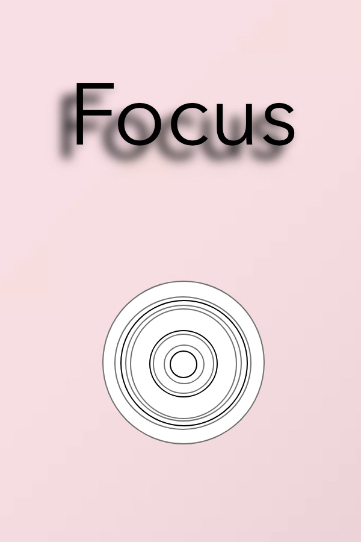
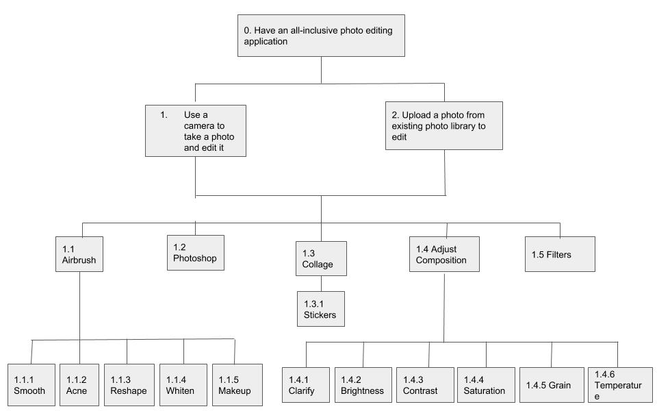
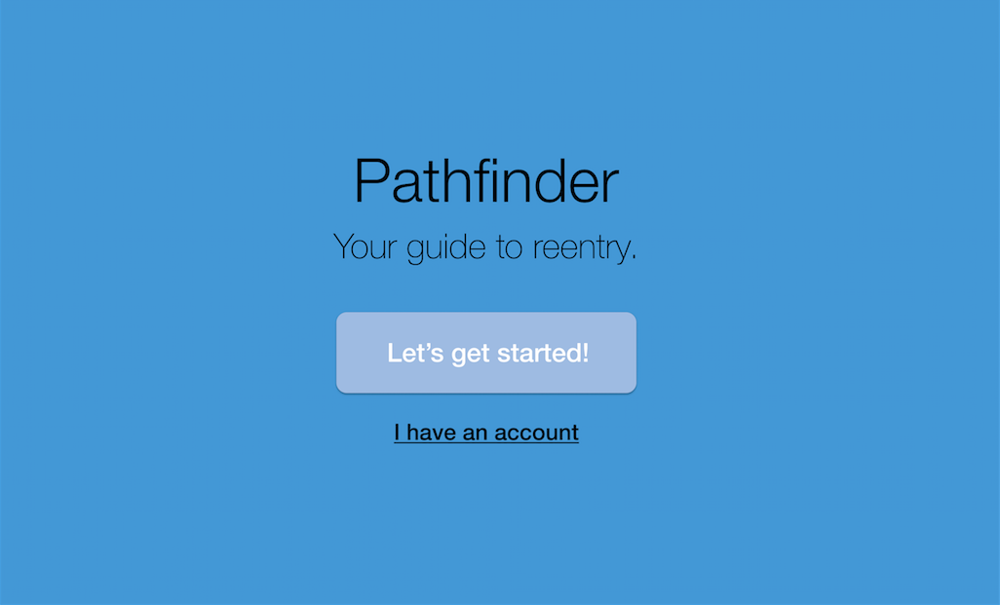
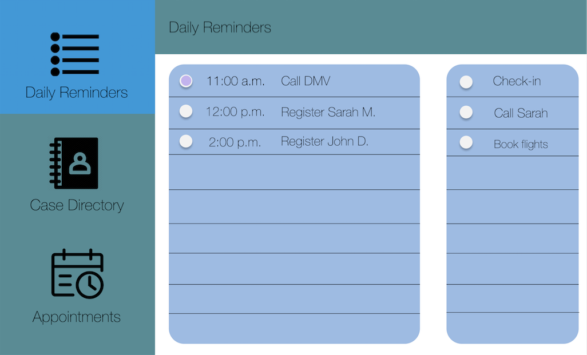
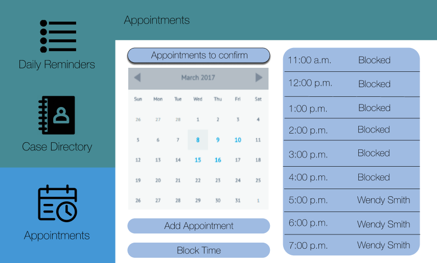
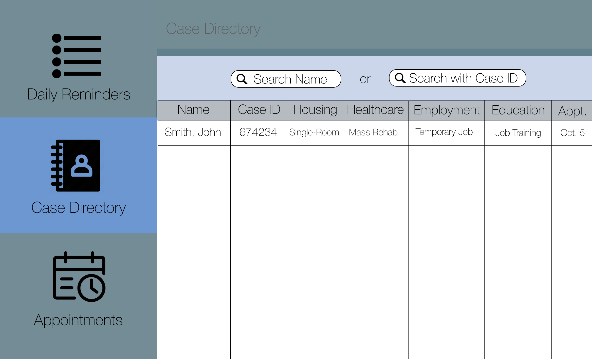

Express App Redesign

Focus: Photo App Design

CPK App Redesign
Office Hours App + Bot Design
Citizens' Re-entry App Design
Dress + Purse Design + Creation

Wellesley College, Class of 2020
Economics & Media Arts + Sciences
People Person, Efficient Multitasker & Avid Learner
UX/UI Design
I have designed and re-designed numerous iOS applications, ameliorating user experiences and user interfaces with Sketch, Illustrator, inDesign, Photoshop, JavaScript, HTML, CSS, jQuery, and Xd.
Financial & Economic Data Analysis
Within Somar Capital Management LP and MIT, I have conducted investment, business law, and political science research, familiarizing me with Excel, Securities Law, Python, and more.
Legal Work
I have worked with Harvard Law School and MIT Sloan School of Management lawyers, law professors, and legal clients, piquing my interest in the interactions between corporate compliance, business law, and cybersecurity.
Communications
I have been writing for national publications since I was 12 years old, fostering my passion for people and their interactions within the economy, legal world, and technological advancements.
This app is a platform for streamlining all popular means of editing photos. It includes:
The following Hierarchal Task Analysis (HTA) model determines the app's tasks
User Analysis + User Personas
The User Personas are mainly members of Generation Z and Millennials, who utilize social media and want to edit, produce, and post high-quality photos. This is why the logo of Focus involves Millennial Pink, which is a color that many popular products today are characterized by. The app will allow users to upload a photo immediately after taking it or from a photo library.
All in all, this app design will allow users to:
Airbrush | Smooth | Acne | Reshape | Whiten | Make-up | Filter | Photoshop | Collage
This app currently allows its users to order online, find a CPK restaurant near them, look at new seasonal features, and track available rewards points. However, I conducted user experience research, examined the current design, and formulated a redesign concept. With my redesign, customers can:
User Experience Research on the Current App


I took to the Apple App Store to carry out User Experience research.
“Please add ability to enter CPK gift cards as a form of payment in the app. This would streamline paying as well.” - joe733
“It would be nice if they used a little bigger font. It is too small currently” -johndoe99
“Finally mobile pay works but still can’t redeem pizza dough rewards through mobile pay. Something to work on I guess.” -Shripathi
“No menu prices on menu items.” -Fralupo
I additionally carried out User Experience Research by examining what people look for most frequently in restaurant applications. According to Urban Taste Bud, the best restaurant apps are those that:
Upon further research, I saw that the Starbucks app is often venerated for its
user-friendliness and efficient capabilities.
Nonetheless, at the moment, the CPK app is hard to navigate, void of aesthetic,
and has an extensive side bar with unnecessary tabs.
Redesign Concept
I completely eliminated the sidebar seeing as it only worsens user experience. Instead, I placed the most important and in-demand features of a restaurant app at the very top. This way, someone can reserve a table at a given location, pay for an item, track CPK Rewards points, and place an order. The original New + Seasonal Tab mostly contained advertisements surrounding new products, so I placed that at the home page.
The reserve space will immediately direct the user to a map--allowing them to look at nearby CPK locations based on the location that the app will track. At the moment, the “Locations” tab does not immediately open to a map--there is solely an input for a zip code. The CPK Rewards tab will introduce a completely new concept. It will allow CPK Rewards to be administered electronically. Customers can gift CPK cards to one another and they can additionally get virtual CPK gift cards if they order online enough or accumulate enough points through restaurant visits. This will incentivize CPK Rewards to be used.
The Place Order tab will additionally introduce a new concept. Rather than simply opening to a “View Menu/Place Order” tab that links one to a location, the page will first open to cater towards the consumers’ needs, inquiring about any potential filters that the user may want to utilize before going straight to the menu. The background is a pizza from CPK. The buttons will allow people to filter exactly what they are looking for.
After choosing various options, the next place order interface will show the various options, their price, and their calories. Upon further inquiry, customers can look at the various ingredients that each one has to offer by clicking on the arrows or one can immediately place the order by clicking on the yellow button that will allow them to quickly place their orders and add items to their cart. After choosing the various items that one wants to order, consumers can click on “Review Cart” in order to get to the Place Order Interface 3. “Review Cart” and “Pay” will take the user to the same place--a place where one can order before check out.
In the current app, consumers can manage his, her, or their shopping of Express items. A cart can also be managed through the app.
User Experience Research

I took to the App Store to carry out User Experience Research in order to identify how to ameliorate this application. Most App reviews for the Express app had to do with software bugs, such as the application closing too frequently or freezing sporadically. The only top comment regarding User Interface was a suggestion surrounding having a potential “favorite” option so that consumers can examine what they may want to purchase, but do not want to add to their cart just yet. I additionally examined other shopping applications in the same industry (American fashion retail) that had higher app review ratings.
Redesign Concept
I added the favorite button, as per the suggestion of the reviewer. I also added a bag icon next to the favorite button in order to allow users to “quick shop,” or add the item in their bag without opening the full interface with the product. Additionally, I streamlined the process of getting to the side bar by placing all of these options at the very top of the application. Likewise, I placed some of the most important aspects of an application--the store locator, trend snap, and express AR, at the bottom of the application so that they can be accessed at all times regardless of what the shopper is doing. This overall improves the user experience because there is a sense of the various capabilities within the application just from the first page.
Within Wellesley's Human-Computer Interaction course, I worked with three classmates to build a low- and high-fidelity prototype for an app that would help students better organize their time and attend office hours. To supplement the app, I additionally created a bot that could potentially serve the same purpose.
User Research + Low-Fidelity Prototype Design
I interviewed students in order to complete user research. I inquired with students about what they looked for during office hours, what they would like to see in an office hours app, and what kind of obstacles they face while attempting to attend office hours at the moment. I utilized Invision in order to design this app, modeling the design after what users would potentially look for during office hours: how to navigate the queue and communicate with a professor or teacher's assistant.
High-Fidelity Prototype Design
The high-fidelity prototype was additionally designed with Invision. After testing the low-fidelity prototype with four different users, feedback was taken into account when designing the high-fidelity prototype. It can be tested here.
Bot Design:
Inspired by my group project for CS220, this chatbot is designed
for Wellesley students
who would like to attend office hours. Students would use it in order to have a central
resource for office hour information, given that office hour information is often sprawled
across various syllabi, websites, and papers. They would use it if they have an impending
question or an upcoming problem set or test and they know that they would like to attend
office hours at some point this week. The prototype was created with Botsociety.
Within the Massachusetts Institute of Technology's Civic Media Lab, I created an early sketch of a platform from my perspective as to what kind of app would be most useful for case managers aiding re-entering citizens. This kind of platform is meant to reduce recidivism.
User Research
I analyzed case studies, such as the AT&T Upskilling Initiative, Cognizant Reskilling and Upskilling, GE mid-career leadership programs, and FutureFit AI, ultimately coming to the conclusion that recidivism rates are successfully reduced through access to vocational education, proper healthcare, adequate residencies, and fulfilling employment opportunities. Thus, I created this app with the idea that case managers should organize how their clients are progressing in each of the aforementioned fields. Capitalizing on the design principles of white space, alignment, metaphors, and the proximity gestalt principle, the following app was created.    
Initially inspired by the fembots of "Austin Powers" as well as Jacquemus's idea of a tiny purse, I created this dress and purse from scratch utilizing two square yards of pink satin, two yards of white fur, an old white sports t-shirt, pink latex, a hot glue gun, and a sewing machine. This dress was debuted at Babson's Weissman Foundry fashion show. Pictures of the creation, consequent fashion show debut, and the final look on myself are below.